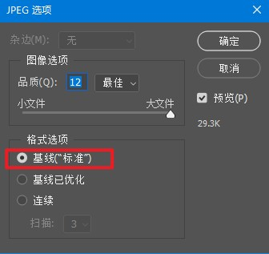

运行中串口传输文件到内存或SD卡
(0.56及其以上上位机版本支持)
如果要传输文件到内存，请先在工程设置里面配置内存文件系统空间大小，默认是0，即没有空间用来储存内存文件。
如果是传输文件到SD卡，请确保SD卡磁盘格式为FAT32,最大支持32G容量的卡
温馨提示：官方有按照本协议开发好的专用串口透传文件工具(SerialFileUp)，并且开放源代码，欢迎下载使用：
点击下载 文件透传工具(SerialFileUp)
以下以传输图片文件到内存为例，介绍如何使用串口传输图片文件到内存或SD卡，当然你也可以传输其他类型的文件，比如纯文本文件。
1.如何使用内存中的图片文件
使用“外部图片“控件，设置path属性为文件路径，如:ram/0.jpg
2.如何使用SD卡中的图片文件
使用“外部图片“控件，设置path属性为文件路径，如:sd0/0.jpg
3.支持什么类型的图片文件
jpg格式:如果使用jpg格式的图片，务必保证图片编码为:baseline DCT,否则将无法显示,使用ps打开jpg图片，将该图片另存为，保存时格式选择“基线（“标准”）”

如果屏幕方向设置的是0度，直接使用jpg原图即可，如果屏幕方向设置的是90度，需要将图片顺时钟旋转90度再给屏幕使用，否则显示出来的图片方向是错的。其他方向180度，270度以此类推，屏幕方向是多少度，就需要您提前把图片顺时钟旋转多少度。
xi格式:此格式为HMI外部图片控件专用图片格式，支持透明背景，推荐使用这种格式，xi格式的图片获取方式可以使用软件工具菜单中的图片转换工具:PictureBox转换
外部图片控件目前仅支持以上两种格式的图片文件。
4.串口传输协议
第一步:发送串口传输文件指令:twfile filepath,filesize
filepath:文件存放路径 如:ram/a.jpg 或 sd0/a.jpg
filesize:文件实际大小
假如要传一个文件到内存中，名字为a.jpg,大小为3282字节,指令为：
twfile "ram/a.jpg",3282
假如要传一个文件到SD卡中，名字为a.jpg,大小为3282字节,指令为：
twfile "sd0/a.jpg",3282
屏幕收到此指令后，会立即创建一个指定大小的文件在目标路径上，如果创建成功将返回:0xfe+结束符,表示已经进入透传状态，可以开始分包透传数据。如果创建文件失败会返回:0x06+结束符,并继续工作在指令接收状态。
第二步：分包透传文件数据
收到0xfe+结束符后，可以开始分包透传数据;一个完整的数据包由2部分组成：包头+数据
包头:3a a1 bb 44 7f ff fe +校验类型(1字节整形数据)+包ID(2字节整形数据) +数据大小(2字节整形数据)，合计12字节
校验类型:0x00为无校验,0x01为CRC16(MODBUS的CRC16校验算法,指令校验篇幅中有计算函数参考),0x0A为标准CRC32
包ID:文件透传开始第一次包ID为0，每成功透传一包，ID加1.
数据大小:数据大小用户随意指定，最小1字节，最大4096字节(此数据大小不包含12字节的包头，但是包含CRC校验码)
数据:文件数据+CRC校验码数据(小端模式，低位在前),如果是无校验的包，就没有CRC校验码。如果是CRC16就是2字节的校验码，如果是CRC32就是4字节的校验码，切记注意校验码数据要记入包头的数据大小参数中。
CRC16校验算法为MODBUS CRC16,点击此处查看参考函数代码 CRC32校验算法为标准CRC32。
屏幕收到一个完整的包数据后，如果处理成功会返回0x05(单字节，没有结束符),此时可进入下一个包的发送。
如果包ID不按规则累加或者包数据出错，屏幕将会返回本包处理失败的错误:0x04（单字节，无结束符）。
所有包发送完成后，屏幕会返回0xfd+结束符。并自动退出透传模式转为指令模式。
如果本包透传失败（超过500ms没有收到屏幕回应或者收到屏幕返回本包校验失败的错误信息），重新发本包数据，重发本包数据时包ID无需加1。
如果数据包发了一半后悔了，停顿20ms以上重新发本包数据即可。
如果透传文件中途想停止透传，请发一个包ID为65535，无校验，数据大小为0的数据包,即:3a a1 bb 44 7f ff fe 00 ff ff 00 00 屏幕收到这样的包数据后会立刻强制结束透传，并返回透传结束的数据：0xfd+结束符
如果你的文件数据中包含退出包数据是不用担心的，因为这个数据的前面满足不了20ms以上的停顿，屏幕只会把他当数据储存，不会当结束包来处理。